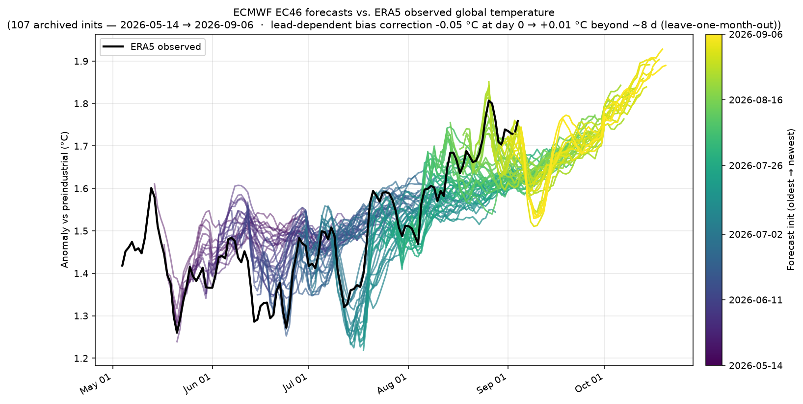
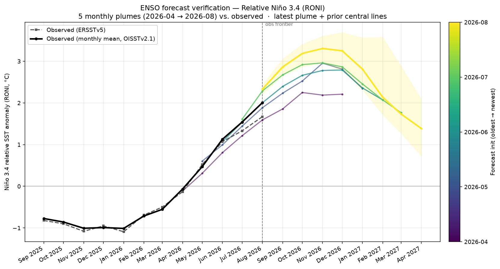
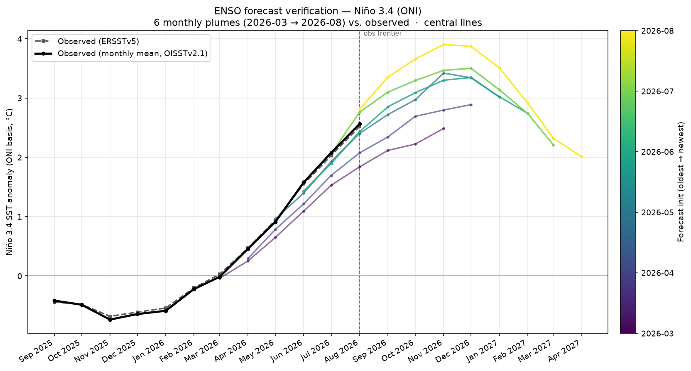
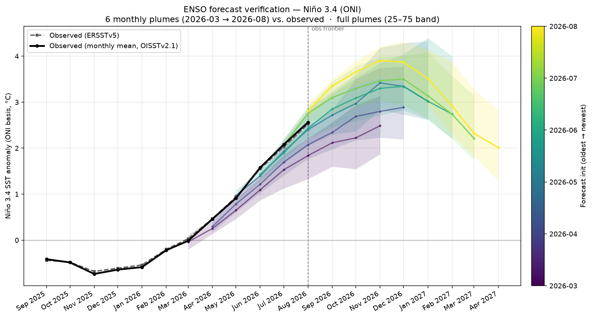
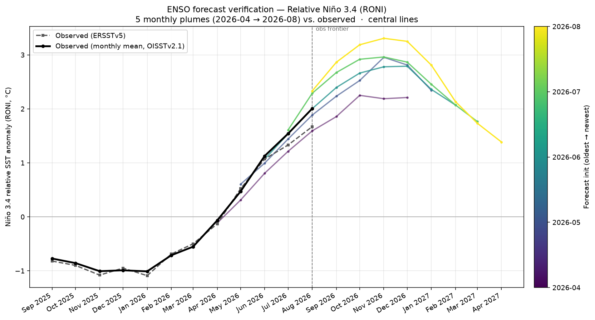
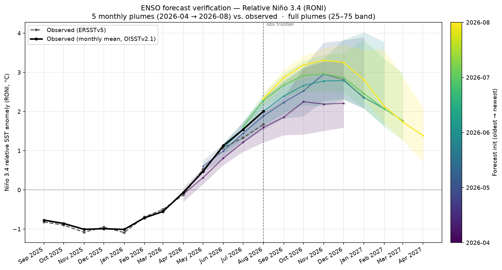

Proposal · Forecast verification
The forecasts are already graded — publish the report card.
The daily pipeline renders forecast-vs-observed skill figures into forecast_skill/ and commits them, but they are not wired into the dashboard layout. This mock-up surfaces them as a "How good are these forecasts?" section, giving the projection and plume panels the credibility context readers ask for first.
05
How good are these forecasts?
Rendered daily · forecast_skill/Every past forecast replayed against what actually happened. Temperature: each archived ECMWF EC46 initialization against ERA5 observations. ENSO: each frozen monthly multi-model plume against the observed Niño 3.4 / RONI monthly means. No cherry-picking — every archived init is drawn.
EC46 global temperature forecasts vs ERA5 observed
Daily
Every archived EC46 init (colored oldest → newest) against the
observed ERA5 series in black, with the lead-decaying bias correction applied
— the same transform the dashboard's 46-day forecast tail uses.
ENSO plume verification · ONI (Niño 3.4)
MonthlyFrozen monthly multi-model plumes vs observed monthly-mean
OISSTv2.1 Niño 3.4 (black) and ERSSTv5 (dashed). Latest plume drawn with
its 25–75% band; earlier months keep their central lines.
ENSO plume verification · RONI
Monthly
Same verification on the relative index (RONI), matching the
dashboard's page-level ONI/RONI switch.
Alternative styles the pipeline already renders
VariantsONI · lines

ONI · plumes

RONI · lines

RONI · plumes

Each (index × style) PNG is regenerated by the same cron that
renders the dashboard's static images; only the hybrid style is proposed for
the page, the rest stay available as downloads.